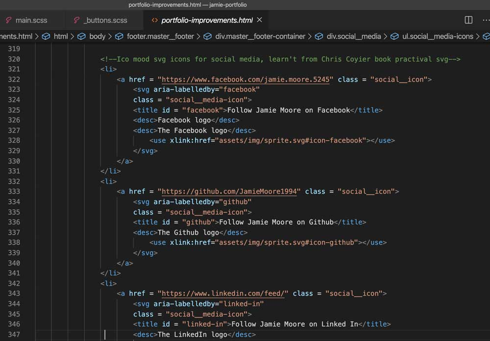

I thought I finished building my first portfolio website - but there was plenty of issues to improve and fix
So, I built my first ever portfolio website and there was a sense of relief, but as with any website there is always room for improvement and issues to fix – as was the case with my website.
Usability issues
After feedback from tutors, students and various industry professionals, it was evident that there was a major usability issue with the navigation disappearing on a number of pages. Pierce (no date) states that the most annoying part of a website is a confusing and unsuitable navigation and that a confusing navigation may leave users feeling lost and wondering what to do next. This was the issue for my website, as the navigation completely disappeared on all the blog pages and was left too late before project submission to rectify – which resulted in confused users. This was rectified by ensuring the global navigation is available on every page.
Images before usability fixes
Missing nav on the industry blog page
Missing nav on the portfolio development blog page
Missing nav on the website optimisation blog page
Images after usability fixes
Fixed nav on the industry blog page - but added to every page for better usability
Another issue was on the portfolio page, where I displayed an image for users to get a glimpse of a project website I have built. The issue was that users could not clarify whether it was an image of a website page or a basic image due to not displaying the browser URL in the photograph.
Images before browser URL fix
Image of live music website not showing the browser URL
Images after browser URL fix
Browser URL now showing for the Live Music website
Accessibility: SVG Images
I was relativity new to using SVG images on my own projects and decided to use them to display my social media icons. I used free online service IcoMoon to get my social media icons – but the main drawback being that to view them when working on a project you need a live server as they do not display without one.
As I was new to SVG images I was not aware of how to make them accessible by providing text equivalent description of the images. According the the W3C specification, to meet the guideline to displaying an accessible SVG image is to provide a title - which is a human readable title for the image that is also accessible by a speech synthesizer – and provide a desc, which is a more longer and complete description of the image.
To improve this, I added a relevant title and description to each SVG image on the website and I will continue to do so on every project I use SVG images as accessible content is paramount.
Images before semantic HTML SVG markup
Inaccessible HTML markup for the SVG icons
Images after semantic HTML SVG markup

Accessible HTML markup for the SVG icons
Branding
Throughout the website there is a theme of the wavy SVG background, but there is some inconsistency. There was also room for improvement on the blog posts to give the user more clarity that I wrote the blog post. To improve this I ensured the background on every page had a curvy SVG background and added a small image of myself to each blog post.
Images before website branding improvements
The different background image on the Industry Blog page
Square edges for the blog posts not following the theme of the curvy SVG backgrounds
Not much branding displaying the author on the blog pages
Images after website branding improvements
Fixing the header of the Industry blog page to keep in theme of the website
Keeping in theme of the site by adding a border radius to the edge of the boxes
Adding an image of myself added to each blog post to add to the branding to the website
Moving my CSS to SASS
Currently, my portfolio site was all styled in one long CSS file - with a total of 1884 lines of code. As I will be consistently adding pages to my website, having one long CSS file would not be flexible and easy to edit. SASS allows you to divide up all your CSS into multiple files for a more organised and effient way to edit each page of the website, and the main benefit is that only one HTTP request is called because you can compile all the SASS files into one CSS file (Mauri, 2018). My compiled CSS file is also 11kb less than the original CSS file - and that is with two extra pages being added and styled.
Before and after using SASS
Ther orginal file size before using SASS
File size for all the compiled SASS files 11kb lower